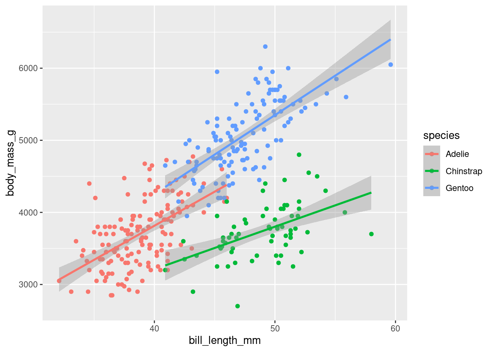

The following package(s) will be installed:
- palmerpenguins [0.1.1]
These packages will be installed into "~/work/378kimproj/378kimproj/renv/library/R-4.2/x86_64-pc-linux-gnu".
# Installing packages --------------------------------------------------------
- Installing palmerpenguins ... OK [linked from cache]
Successfully installed 1 package in 7 milliseconds.
install.packages("dplyr")
The following package(s) will be installed:
- dplyr [1.1.4]
These packages will be installed into "~/work/378kimproj/378kimproj/renv/library/R-4.2/x86_64-pc-linux-gnu".
# Installing packages --------------------------------------------------------
- Installing dplyr ... OK [linked from cache]
Successfully installed 1 package in 5.5 milliseconds.
install.packages("dbplyr")
The following package(s) will be installed:
- dbplyr [2.5.0]
- tidyselect [1.2.1]
These packages will be installed into "~/work/378kimproj/378kimproj/renv/library/R-4.2/x86_64-pc-linux-gnu".
# Installing packages --------------------------------------------------------
- Installing tidyselect ... OK [linked from cache]
- Installing dbplyr ... OK [linked from cache]
Successfully installed 2 packages in 8.5 milliseconds.
install.packages("ggplot2")
The following package(s) will be installed:
- ggplot2 [3.5.0]
These packages will be installed into "~/work/378kimproj/378kimproj/renv/library/R-4.2/x86_64-pc-linux-gnu".
# Installing packages --------------------------------------------------------
- Installing ggplot2 ... OK [linked from cache]
Successfully installed 1 package in 5.9 milliseconds.
install.packages("DBI")
The following package(s) will be installed:
- DBI [1.2.2]
These packages will be installed into "~/work/378kimproj/378kimproj/renv/library/R-4.2/x86_64-pc-linux-gnu".
# Installing packages --------------------------------------------------------
- Installing DBI ... OK [linked from cache]
Successfully installed 1 package in 5.9 milliseconds.
install.packages("duckdb")
The following package(s) will be installed:
- duckdb [0.10.1]
These packages will be installed into "~/work/378kimproj/378kimproj/renv/library/R-4.2/x86_64-pc-linux-gnu".
# Installing packages --------------------------------------------------------
- Installing duckdb ... OK [linked from cache]
Successfully installed 1 package in 7.7 milliseconds.
install.packages("vetiver")
The following package(s) will be installed:
- vetiver [0.2.5]
These packages will be installed into "~/work/378kimproj/378kimproj/renv/library/R-4.2/x86_64-pc-linux-gnu".
# Installing packages --------------------------------------------------------
- Installing vetiver ... OK [linked from cache]
Successfully installed 1 package in 5.4 milliseconds.
install.packages("tidyverse")
The following package(s) will be installed:
- tidyverse [2.0.0]
These packages will be installed into "~/work/378kimproj/378kimproj/renv/library/R-4.2/x86_64-pc-linux-gnu".
# Installing packages --------------------------------------------------------
- Installing tidyverse ... OK [linked from cache]
Successfully installed 1 package in 5.5 milliseconds.
install.packages("ISLR2")
The following package(s) will be installed:
- ISLR2 [1.3-2]
These packages will be installed into "~/work/378kimproj/378kimproj/renv/library/R-4.2/x86_64-pc-linux-gnu".
# Installing packages --------------------------------------------------------
- Installing ISLR2 ... OK [linked from cache]
Successfully installed 1 package in 5.3 milliseconds.
install.packages("rpart.plot")
The following package(s) will be installed:
- rpart.plot [3.1.2]
These packages will be installed into "~/work/378kimproj/378kimproj/renv/library/R-4.2/x86_64-pc-linux-gnu".
# Installing packages --------------------------------------------------------
- Installing rpart.plot ... OK [linked from cache]
Successfully installed 1 package in 5.1 milliseconds.
install.packages("vip")
The following package(s) will be installed:
- vip [0.4.1]
These packages will be installed into "~/work/378kimproj/378kimproj/renv/library/R-4.2/x86_64-pc-linux-gnu".
# Installing packages --------------------------------------------------------
- Installing vip ... OK [linked from cache]
Successfully installed 1 package in 5.4 milliseconds.
install.packages("randomForest")
The following package(s) will be installed:
- randomForest [4.7-1.1]
These packages will be installed into "~/work/378kimproj/378kimproj/renv/library/R-4.2/x86_64-pc-linux-gnu".
# Installing packages --------------------------------------------------------
- Installing randomForest ... OK [linked from cache]
Successfully installed 1 package in 5.2 milliseconds.
install.packages("tidymodels")
The following package(s) will be installed:
- doFuture [1.0.1]
- parsnip [1.2.1]
- rsample [1.2.1]
- rstudioapi [0.16.0]
- tidymodels [1.2.0]
- tune [1.2.1]
- workflowsets [1.1.0]
- yardstick [1.3.1]
These packages will be installed into "~/work/378kimproj/378kimproj/renv/library/R-4.2/x86_64-pc-linux-gnu".
# Installing packages --------------------------------------------------------
- Installing parsnip ... OK [linked from cache]
- Installing rsample ... OK [linked from cache]
- Installing rstudioapi ... OK [linked from cache]
- Installing doFuture ... OK [linked from cache]
- Installing yardstick ... OK [linked from cache]
- Installing tune ... OK [linked from cache]
- Installing workflowsets ... OK [linked from cache]
- Installing tidymodels ... OK [linked from cache]
Successfully installed 8 packages in 25 milliseconds.
install.packages("xgboost")
The following package(s) will be installed:
- xgboost [1.7.7.1]
These packages will be installed into "~/work/378kimproj/378kimproj/renv/library/R-4.2/x86_64-pc-linux-gnu".
# Installing packages --------------------------------------------------------
- Installing xgboost ... OK [linked from cache]
Successfully installed 1 package in 5.4 milliseconds.
con <- DBI::dbConnect(duckdb::duckdb(), dbdir ="my-db.duckdb")DBI::dbWriteTable(con, "penguins", palmerpenguins::penguins, overwrite =TRUE)
#Load packages library(palmerpenguins)library(dplyr)library(dbplyr)library(ggplot2)library(duckdb)library(DBI)library(vetiver)library(pins)library(tidyverse)library(tidymodels)library(ISLR2)library(rpart.plot)library(vip)library(xgboost)library(randomForest)#load data con <- DBI::dbConnect( duckdb::duckdb(), dbdir ="my-db.duckdb" )df <- dplyr::tbl(con, "penguins")
#Given EDAdf %>%ggplot(aes(x = bill_length_mm, y = body_mass_g, color = species)) +geom_point() +geom_smooth(method ="lm")

Penguin Bill Length by Sex and Species
# Boxplot for comparison df%>%#formula ggplot(aes(x=species, y = bill_length_mm, fill = species))+#creationgeom_boxplot() +theme_minimal() +labs(title ="Comparison of Bill Length by Species ", x ="Species", y ="Bill Length (mm)")
# Boxplot for comparison df%>%#formula ggplot(aes(x=sex, y = bill_length_mm, fill = species))+#creationgeom_boxplot() +theme_minimal() +labs(title ="Comparison of Bill Length by Sex ", x ="Sex", y ="Bill Length (mm)")
Penguin Bill Length by Interaction of Sex and Species
df %>%ggplot(aes(x =interaction(species, sex), y = bill_length_mm, fill = species)) +geom_boxplot() +theme_minimal() +labs(title ="Comparison of Bill Length by Sex and Species",x ="Species and Sex",y ="Bill Length (mm)",fill ="Species" )
Random Forest for Classification by Species
head(penguins)
# A tibble: 6 × 7
species island bill_length_mm bill_depth_mm flipper_length_mm body_mass_g
<fct> <fct> <dbl> <dbl> <int> <int>
1 Adelie Torgersen 39.1 18.7 181 3750
2 Adelie Torgersen 39.5 17.4 186 3800
3 Adelie Torgersen 40.3 18 195 3250
4 Adelie Torgersen NA NA NA NA
5 Adelie Torgersen 36.7 19.3 193 3450
6 Adelie Torgersen 39.3 20.6 190 3650
# ℹ 1 more variable: sex <fct>
#Random forest for classification for speciestree_spec <-decision_tree() %>%set_engine("rpart")class_tree_spec <-decision_tree() %>%set_engine("rpart") %>%set_mode("classification")class_tree_fit <- class_tree_spec %>%fit(species ~ ., data = penguins)class_tree_fit %>%extract_fit_engine() %>%rpart.plot()
Warning: Cannot retrieve the data used to build the model (so cannot determine roundint and is.binary for the variables).
To silence this warning:
Call rpart.plot with roundint=FALSE,
or rebuild the rpart model with model=TRUE.
#The testing data doesn't perform as well and we get a lower accuracy by around 4%. Let's try to use the cost_complexity option to see if there is a better tree size that will reduce the overfitting that is happening. class_tree_wf <-workflow() %>%add_model(class_tree_spec %>%set_args(cost_complexity =tune())) %>%add_formula(species ~ .)
#With this, we need to use k-fold cross validation and a grid of values set.seed(1234)Penguin_vfold <-vfold_cv(Penguin_train, v =10, strata = species)param_grid <-grid_regular(cost_complexity(range =c(-3, -1)), levels =10)
#Which cost-complexity results in the highest accuracy #| warning: false autoplot(tune_res)
best_complexity <-select_best(tune_res)
#Update the cost_complexity and on the full training set #| warning: false class_tree_final <-finalize_workflow(class_tree_wf, best_complexity)class_tree_final_fit <-fit(class_tree_final, data = Penguin_train)class_tree_final_fit